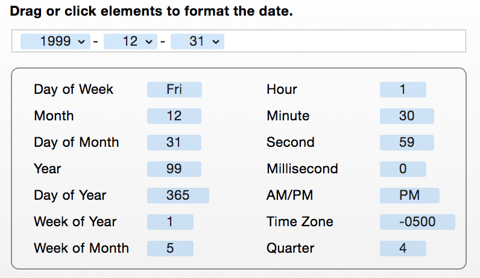

Editing date patterns
When editing patterns, you can specify attributes that are based on dates. In such cases, you can further edit the date pattern by clicking on the attribute and selecting the "Edit Date Pattern…" menu item.

The interface for editing the date pattern is similar to editing patterns in general. You can type in text as normal or click/drag in date tokens which will be substituted with their real values when the rule runs. For more information on editing patterns, see Editing patterns.
The date pattern need not contains every token to constitute a full date. You can specify just the year and month or just the hour, if you choose.
If you hover your mouse over a date token after adding it to the field, you will see that an arrow appears. This indicates you can click on it for more formatting options. These options show alternate ways of displaying the attribute. For instance, if you drag in a "Month" token, it can be represented as a number, as a number with zero padding (if the number is a single digit, it will add a zero before it like "01" - the underline indicates the number of digits), an abbreviated name ("Jan") and full name ("January").
When you are done editing, click "Done" or click "Cancel" to discard your changes.